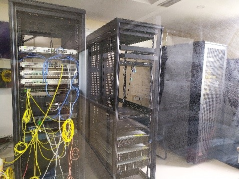
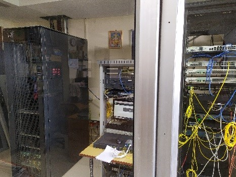
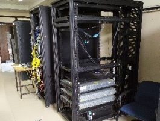
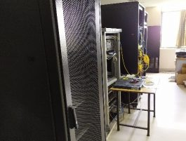
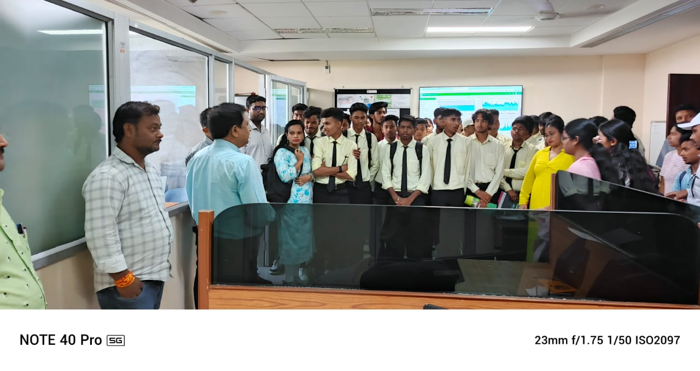
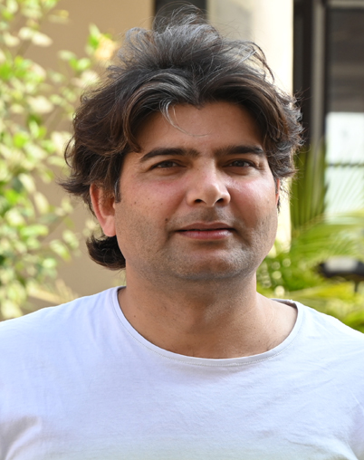

Central Computing
Shared academic computing labs with high-performance workstations, dual OS booting, and specialized statistical and analytical toolkits.
Reliable computing, secure gigabit campus connectivity, and responsive technical support for the Central University of South Bihar academic community.
Established from the inception of the University, the Centre is equipped with cutting-edge technology and houses over 386 high-performance computers. Every system is fitted with modern operating systems and specialized application software to meet the dynamic needs of teaching, learning, and research.
All systems are protected through enterprise firewall and antivirus infrastructure. Licensed academic software includes SPSS, MATLAB, MINITAB, Adobe Creative Suite, QuarkXPress, Admin Console, KOHA, AMBER, and Accelrys. A dedicated DG power station provides seamless backup, while critical servers and labs operate with online UPS protection.
Shared academic computing labs with high-performance workstations, dual OS booting, and specialized statistical and analytical toolkits.
1 Gbps connectivity through high-speed gigabit Ethernet and OFC backbone spanning all schools, library, hostels, and administrative complex.
Multi-tier enterprise firewall, UTM appliances, endpoint antivirus, and continuous monitoring to safeguard institutional data and research.
High-capacity central DG generator backed by redundant local online UPS banks ensuring uninterrupted uptime for digital examinations.
The University maintains high-availability rack servers powering official email communication, Samarth e-Governance portal, institutional website, digital library databases, and student portals.





Internet connectivity is provided under the National Mission on Education through Information and Communication Technology (NME-ICT) project of the Government of India. All workstations are connected through 1 Gbps high-bandwidth internet pipeline.
Enterprise-grade CISCO networking hardware delivers stable and hassle-free connectivity across academic blocks, smart classrooms, research laboratories, seminar halls, and residential hostels.
Room No. 303, 3rd Floor
CUSB Main Campus, Gaya
Room No. 321, 3rd Floor
CUSB Main Campus, Gaya
Room No. 137, 1st Floor
CUSB Main Campus, Gaya
| Image | Name of Staff | Designation | Email Address | Telephone / Ext. |
|---|---|---|---|---|
| Mr. Ashok Singh | System Analyst | ashok@cub.ac.in | 0631-229535 | |
 |
Md. Motiur Rahman | Senior Technical Assistant, Computer | mrahman@cub.ac.in | N/A |
| Mr. Nripendra Singh | Senior Technical Assistant, Computer | nripendra@cub.ac.in | N/A | |
| Mr. Prashant Raman | Senior Technical Assistant | pr.swami@cub.ac.in | 0631-229536 | |
| Mr. Rajesh Kumar Niranjan | Technical Assistant, Computer Lab | rkniranjan@cub.ac.in | Ext. 218 | |
| Mr. Rakesh Ranjan | Technical Assistant, Computer | rakeshranjan@cusb.ac.in | 0631-229536 |
The committee guides the Centre's strategic IT roadmap, cybersecurity protocols, and digital infrastructure initiatives across the university.